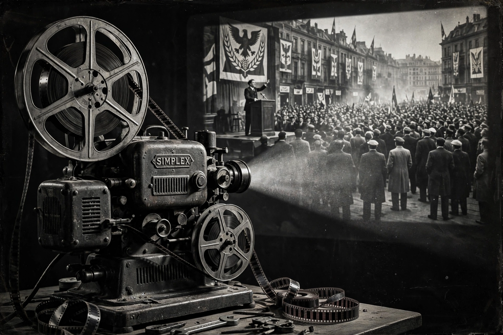

A propaganda film is a film that involves some form of propaganda: it is intended to promote a political idea, institution or leader, or to shape attitudes toward a cause, often by selective or emotional presentation rather than balanced argument.
Governments used film for persuasion from the First World War onward — for example Britain's The Battle of the Somme (1916) and American Committee on Public Information productions. Soviet cinema of the 1920s, notably Sergei Eisenstein's Battleship Potemkin (1925), fused propaganda with montage art. Nazi Germany's ministry under Joseph Goebbels produced Leni Riefenstahl's Triumph of the Will (1935) and the antisemitic Jud Süß (1940). The United States answered with Frank Capra's Why We Fight series (1942–45), explaining the war to troops and the public.
Common techniques include repetition of slogans, demonisation of an enemy, appeals to patriotism and fear, selective editing, and stirring music. Scholars distinguish overt state propaganda from commercial and subtle ideological filmmaking, and the term is also applied to later wartime, Cold War, and terrorist-recruitment media.